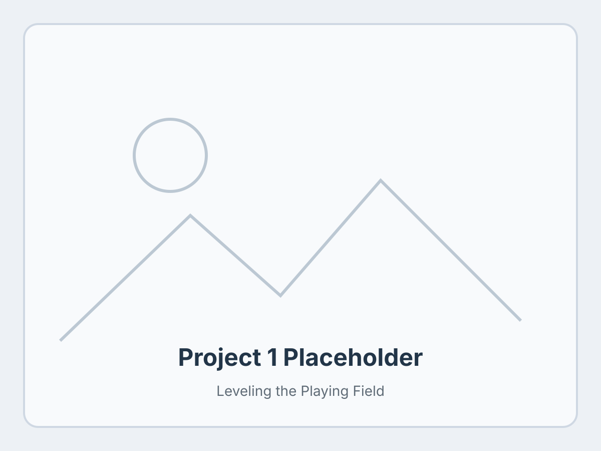
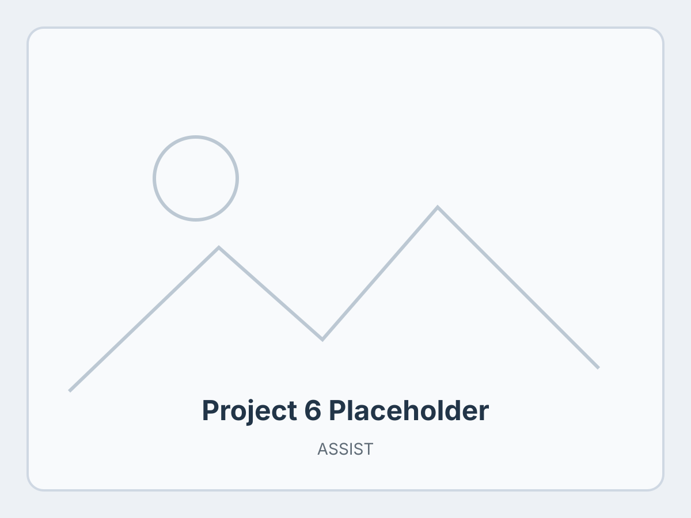

Our paper IKIWISI was accepted at DIS'25.
About
Designing intelligent systems that make digital interaction more usable and inclusive.
I am a fourth-year Ph.D. candidate in Informatics at Penn State University's College of Information Sciences and Technology (IST). I work under the supervision of Dr. Syed Billah at the a11y lab. I hold a Bachelor’s degree in Computer Science and Engineering from the Bangladesh University of Engineering and Technology (2017) and a Master’s in Informatics from Penn State (2024).
My current research focuses on enhancing user experience through agentic, mostly automated workflows powered by large multimodal models (LMMs) and retrieval-augmented generation (RAG) tools. These workflows aim to reduce the cognitive and physical demands of digital interaction by enabling intelligent agents to perceive, reason, and act on behalf of users.
This direction builds on my earlier Ph.D. work addressing system- and application-level UX challenges in desktop and mobile platforms. I developed models and tools to improve non-visual and low-vision accessibility, grounded in participatory design and empirical evaluation.
My first-author publications have appeared at CHI, IMWUT, DIS, ASSETS, and UIST, including a Best Paper Honorable Mention at UIST 2024.
Focus
Current research direction
My recent projects bridge human-centered design with AI. I study how multimodal systems can support interface understanding, reliability analysis, accessibility APIs, and assistive workflows that help people navigate digital environments with less friction.
Highlights
- Ph.D. candidate in Informatics at Penn State
- Research spanning accessibility, HCI, and applied multimodal AI
- First-author work at CHI, DIS, ASSETS, IMWUT, and UIST
- Best Paper Honorable Mention at UIST 2024
Updates
News
On the job market — open to Summer 2025 internships and full-time industry research positions.
Wheeler received an Honorable Mention for Best Paper at UIST'24.
Paper on blind navigation accepted at ASSETS'24.
Wheeler paper accepted at UIST'24.
Passed the Ph.D. comprehensive exam.
Paper on perceived accessibility accepted at CHI'23.
Started the Ph.D. at Penn State.
Selected Work
Portfolio
Each card includes a placeholder image file you can replace later.

Leveling the Playing Field
Public presentation and research communication material.
Replace: assets/placeholders/project-1.svg
Surveyor
Exploration support tool for blind and low-vision users.
Replace: assets/placeholders/project-2.svg
ImageAssist
Touchscreen image exploration support for BLV users.
Replace: assets/placeholders/project-3.svg
Spatial Awareness Tools
Research on gamer preferences for non-visual navigation.
Replace: assets/placeholders/project-4.svg
NavStick
Look-based blind navigation approach for games.
Replace: assets/placeholders/project-5.svg

ASSIST
Assistive sensor system for indoor travel and navigation.
Replace: assets/placeholders/project-6.svg
Get in touch
Contact
For collaboration, research, or internship and full-time opportunities, feel free to reach out.